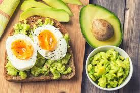

desayuno proteico
tostadas integrales con huevo y palta, un combo equilibrado para arrancar el día con energía y saciedad.
12 minutos
1 porción
proteico & económico

ingredientes
- 2 rebanadas de pan integral
- 1 palta pequeña
- 1 huevo
- semillas de sésamo o chía
- sal, pimienta y gotas de limón
paso a paso
- 1. tostá las rebanadas de pan hasta que queden bien crujientes.
- 2. aplastá la palta con un toque de limón, sal y pimienta y untala sobre el pan.
- 3. cociná el huevo a la plancha o pochá y colocalo encima de las tostadas.
- 4. sumá semillas para aportar textura y serví inmediatamente.